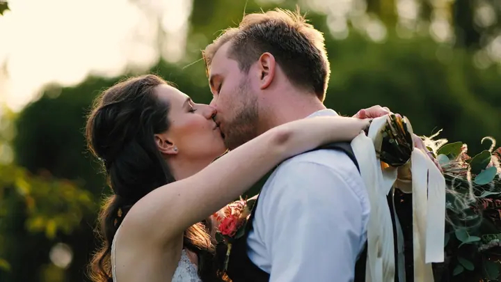
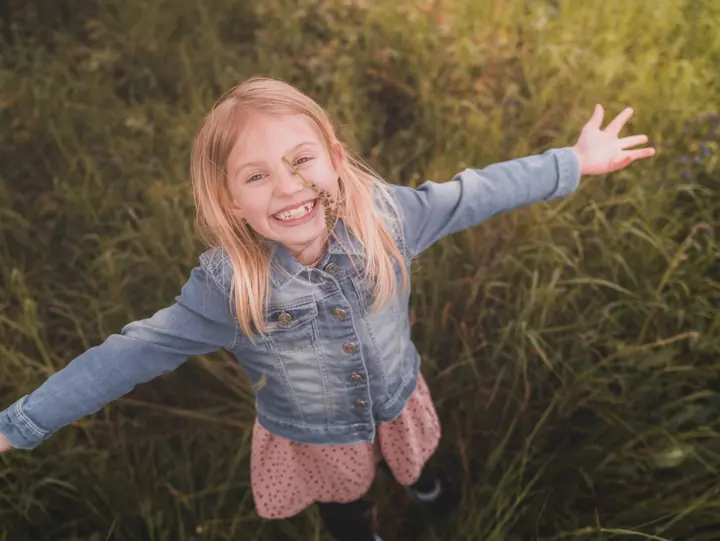
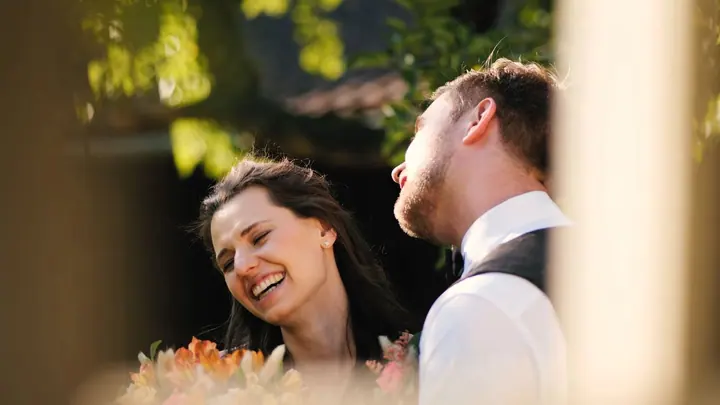

01 / 04
Svatební filmy
Natočím váš svatební den a dostanete krátký klip, delší film a extra short klip na sociální sítě. Podle balíčku přidám i záběry z dronu a fotky z videa.
Zeptat se na termín→





Svatební filmy, ke kterým se budete vracet
Zeptat se na termín →(01) Ahoj
Jmenuji se Lukáš Fürst a zhruba osm let natáčím svatby a promo videa. Vedle kamery fotím i rodiny a děti , často venku v přírodě . Když chcete video i fotky, přijedeme jako sehraný tým.
8let za objektivem
(02) Co dělám
01 / 04
Natočím váš svatební den a dostanete krátký klip, delší film a extra short klip na sociální sítě. Podle balíčku přidám i záběry z dronu a fotky z videa.
Zeptat se na termín→02 / 04
Když chcete video i fotky, přijedeme jako sehraný tým. Deset hodin natáčení a focení, dron, fotokoutek a 250 upravených fotografií.
Zeptat se na termín→03 / 04
Rodinné, vánoční a párové focení i focení s dětmi, v interiéru nebo venku. Focení trvá 45 minut a obsahuje 10 upravených fotek.
Zeptat se na termín→Dále nabízím
Klidné portrétní focení pro ženy v interiéru, často v černobílém podání.
↗(03) Portfolio
Kliknutím fotku zvětšíte · fotografie jsou ilustrační
(04) Postup
Od první zprávy po hotovou galerii.
Krok 1 z 4
Napíšete mi nebo zavoláte, domluvíme datum a místo svatby. Jezdíme po celé České republice.
Krok 2 z 4
Společně vybereme, co vám sedí: půldenní Basic, celodenní Prémium, nebo All in one s videem i fotkami.
Krok 3 z 4
Přijedu podle domluvy a natáčím celý den. U balíčku Prémium přidám i záběry z dronu.
Krok 4 z 4
Dostanete krátký klip, podle balíčku i delší film a fotky z videa. Klip vždy včas.
Jeden den, jeden film, který si pustíte znovu.
(05) Za objektivem
Jmenuji se Lukáš Fürst a natáčení svateb a promo videí se věnuji přibližně osm let. Vystudoval jsem obor animace a propagační grafika, ale hned po škole jsem se pustil jen do kamery a fotografie.
Zakládám si na individuálním přístupu a na neobyčejných záběrech, aby byl právě váš klip jedinečný. Chci, abyste si při každém zhlédnutí znovu prožili ten krásný pocit z vašeho velkého dne. Kromě klipu dostanete i delší verzi, kde najdete všechny momenty, a krátký klip na sociální sítě.
Fotografii se věnuji také, i když se v ní pořád učím. Fotím rodiny, děti, páry a ženské portréty. Jezdíme po celé České republice a pokud chcete video i fotky, zajistíme obojí jako sehraný tým.
Lukáš
Lukáš Fürst · Svatební kameraman a fotograf
Balíček Basic stojí 12 000 Kč a obsahuje 5 hodin natáčení, krátký klip (4 min) a fotky z videa, cesta v ceně není. Balíček Prémium za 22 000 Kč nabízí 10 hodin natáčení, cestu v ceně, záběry z dronu, krátký klip a delší film (20 min).
Ano, v balíčku All in one za 49 000 Kč. Obsahuje 10 hodin, krátký klip, delší film, cestu, dron, fotokoutek a 250 upravených fotografií.
Jezdíme po celé České republice. U balíčku Basic se cesta počítá zvlášť, v balíčcích Prémium a All in one je už v ceně.
Rodinné, vánoční, párové focení nebo focení s dětmi trvá 45 minut a stojí 1 500 Kč za 10 fotek. Každá další fotka je za 100 Kč a fotky vám po domluvě můžu i vytisknout a zarámovat.
(07) Kontakt
Napište pár vět o tom, co si představujete, a termín, který se vám hodí.